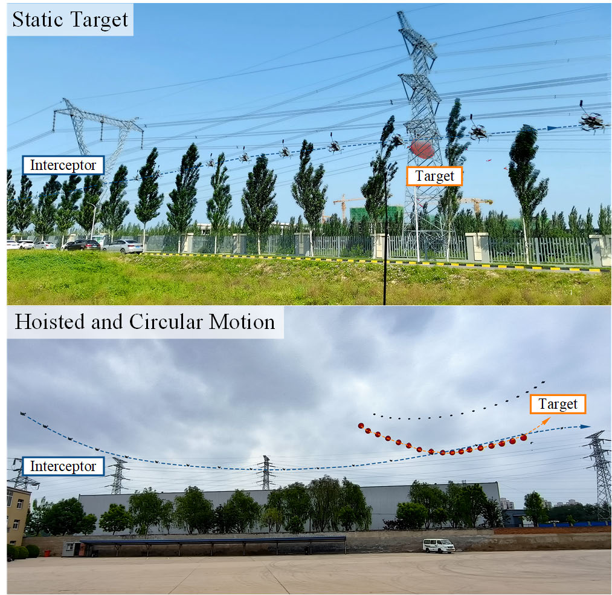
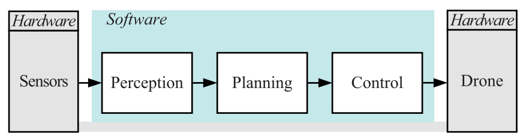
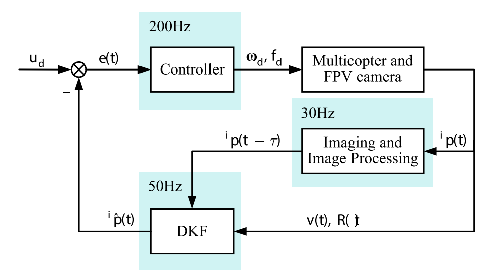
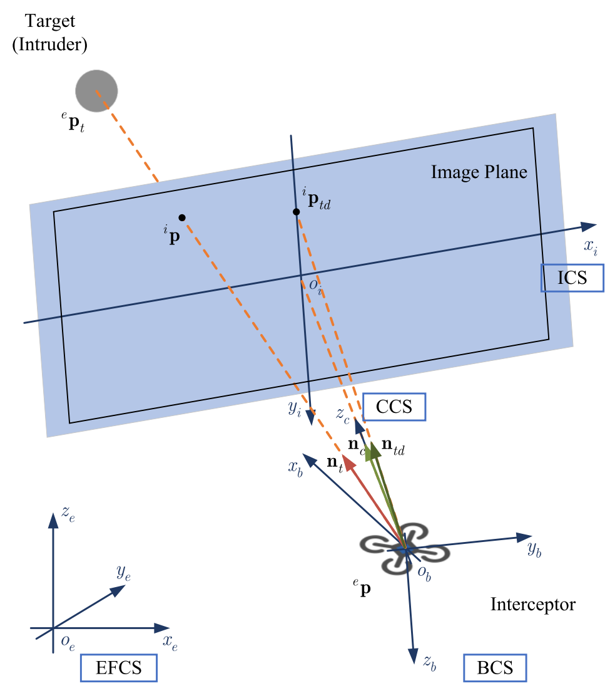
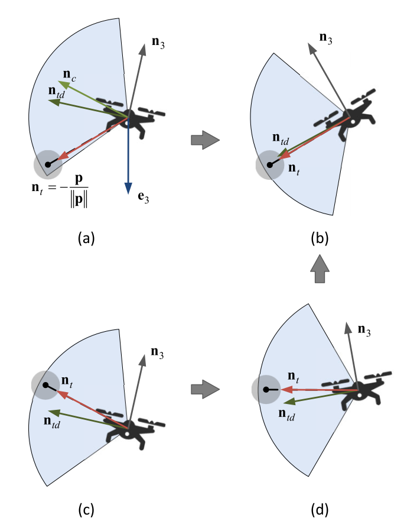
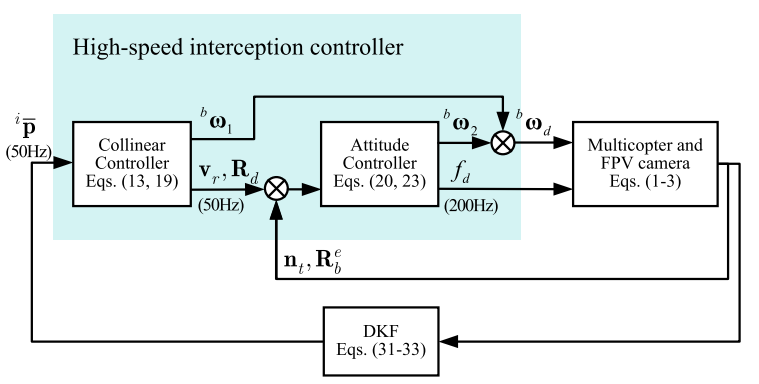
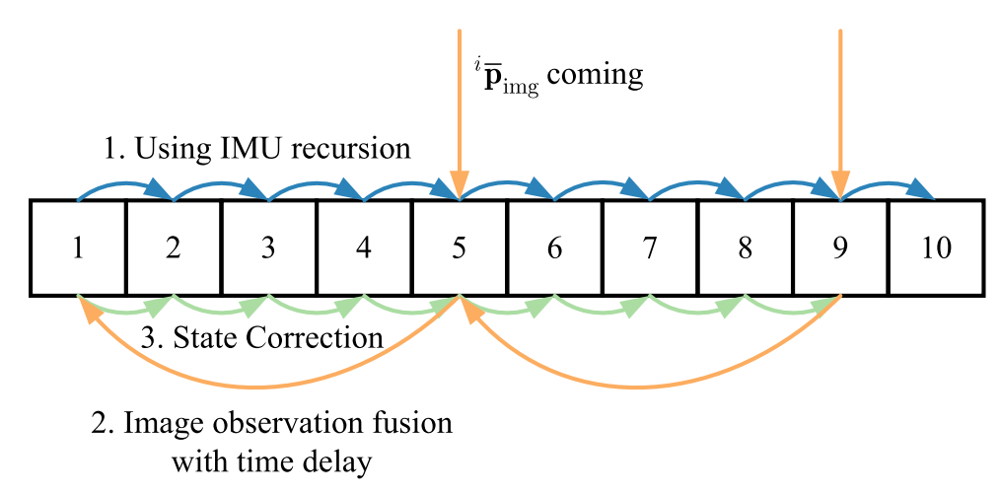
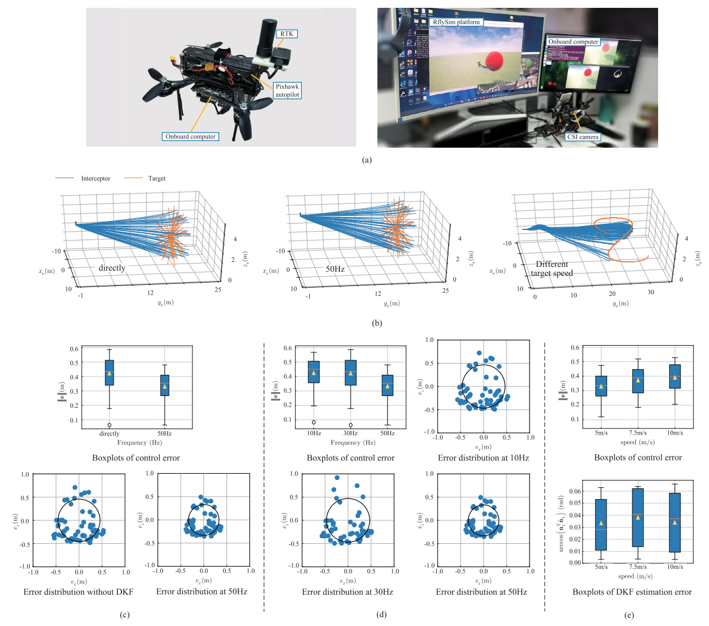
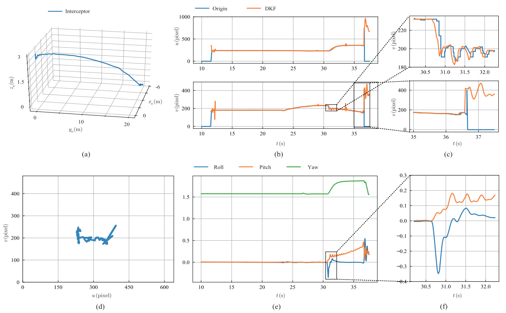

| 标题 | High-Speed Interception Multicopter Control by Image-Based Visual Servoing（基于图像视觉伺服的高速拦截多旋翼控制） |
| 作者 | Kun Yang（杨昆）、Chenggang Bai（白成刚）、Zhikun She（佘志坤）、Quan Quan（全权，通讯作者，Senior Member IEEE） |
| 单位 | 北京航空航天大学，自动化科学与电气工程学院 / 数学科学学院 |
| 发表 | IEEE Transactions on Control Systems Technology，2025年1月，Vol. 33, No. 1, pp. 119–135 |
| DOI / 链接 | 10.1109/TCST.2024.3451293 | 投稿: 2023-11-17 | 修回: 2024-06-22 | 接收: 2024-08-21 | 发表: 2024-09-11 | 视频: YouTube |
| 资助 | 国家重点研发计划 (2022YFA1005103)、国家自然科学基金 (12371452) |
| TL;DR | 提出一种基于图像视觉伺服（IBVS）的高速多旋翼拦截方案——拦截无人机仅依靠固联前视单目相机（无云台），在 SO(3) 上设计大机动 IBVS 控制器（俯仰角可达 50 度），配合延迟卡尔曼滤波器（DKF）补偿约 80 ms 图像处理延迟和低帧率问题。HITL 仿真 50 次统计验证：CEP = 0.332 m（比无 DKF 降低 18.6%）；实飞验证：静态目标拦截终端速度 21 m/s，机动目标拦截 10.5 m/s。这是极为罕见的多旋翼完全自主视觉高速拦截实验。 |
| 灵感来源 | 启发产生的洞察 | 类型 |
|---|---|---|
| Gamagedara et al. (2021) — 延迟 RTK-GPS 的四旋翼状态估计 | 在延迟期间用次优估计正常更新协方差，延迟测量到达时仅附加一个修正项——避免了完全重积分，同时保证延迟后最优。本文将这一思想从 GPS 延迟迁移到视觉延迟 | 方法迁移 |
| Barrier Lyapunov Function (Tee et al. 2009) | BLF 在状态逼近约束边界时使 Lyapunov 导数趋向无穷大——自然保证约束永不被违反。这比硬约束（if 目标接近边缘 then 最大转弯）更优雅——连续可微，可嵌入 Lyapunov 稳定性证明 | 数学工具 |
| SO(3) 几何控制 (Lee et al. 2010, Yu et al. 2015) | 直接在 SO(3) 流形上设计姿态控制器——用旋转矩阵而非欧拉角，全局无奇异性，指数/对数映射提供流形上的自然运算。消除了大角度下欧拉角线性化的根本缺陷 | 架构创新 |
| 多旋翼欠驱动的共线几何直觉 | 推力方向与机体 $z_b$ 轴固联——加速度方向与姿态耦合。如果设计视线向量 $\mathbf{n}_{td}$ 尽可能接近推力方向 $\mathbf{n}_f$（在 FOV 约束内），则大部分加速度指向目标，拦截速度最快 | 几何直觉 |
flowchart TB
subgraph 硬件层["硬件层 · 拦截多旋翼平台"]
direction LR
机架["5寸机架 · 推重比约3 · 续航20min"]
飞控["Pixhawk Nano V5 · 姿态内环200Hz"]
机载计算机["Jetson Xavier NX · DKF+外环50Hz"]
相机["前视CSI相机 · 120度FOV · 固联安装"]
IMU传感器["机载IMU · 200Hz · 陀螺+加速度计"]
end
subgraph 感知层["感知层 · 目标检测+图像处理"]
direction LR
颜色识别["颜色识别 · 红色气球/目标 · 30Hz"]
图像坐标["归一化图像坐标 · ip = (pxi/foc, pyi/foc)"]
end
subgraph 状态估计层["DKF观测器 · 50Hz 延迟补偿"]
direction LR
IMU递推["IMU递推 200Hz · 18维状态传播"]
状态缓存["历史状态缓存 · D周期滑动窗口"]
延迟修正["图像到达 · 回退k-D修正 · 前向传播至k"]
估计输出["实时估计输出 · 50Hz · 高于相机30Hz"]
end
subgraph 控制层["共线控制器 · 外环50Hz+内环200Hz"]
direction LR
外环共线["外环共线控制 50Hz · Barrier Lyapunov · 期望加速度ad"]
期望姿态["SO(3)指数映射 · 期望姿态Rd · 仅pitch-roll"]
内环姿态["内环姿态控制 200Hz · Frobenius误差 · 角速度bd"]
推力映射["推力fd映射 · 饱和约束[0,fm] · 阻力补偿"]
end
subgraph 执行与目标["执行层+目标"]
direction LR
电机["T-Motor推进系统 · 最大加速度5m/s²"]
拦截完成["拦截完成 · pr→0 · 终端速度20m/s"]
入侵目标["入侵无人机 · 未知加速度eat · 机动飞行"]
end
相机 --> 颜色识别 --> 图像坐标
图像坐标 -->|"延迟D周期(~80ms)"| 延迟修正
IMU传感器 --> IMU递推 --> 状态缓存 --> 延迟修正
延迟修正 --> 估计输出
估计输出 -->|"ip估计+q+vr"| 外环共线
外环共线 -->|"ad"| 期望姿态
期望姿态 -->|"Rd"| 内环姿态
内环姿态 -->|"bd"| 推力映射
推力映射 --> 电机
电机 --> 拦截完成
飞控 --> 内环姿态
机载计算机 --> 颜色识别
机载计算机 --> 延迟修正
机载计算机 --> 外环共线
入侵目标 -.->|"视觉观测"| 相机
机架 --> 飞控
拦截完成 -.->|"反馈 · pr收敛验证Lyapunov"| 内环姿态
估计输出 -.->|"反馈 · CEP对比统计"| 延迟修正
classDef 硬件 fill:#fef7ed,stroke:#f59e0b,stroke-width:2px,color:#92400e
classDef 感知 fill:#e8f0fe,stroke:#3b82f6,stroke-width:2px,color:#1d4ed8
classDef 估计 fill:#f0ebfd,stroke:#8b5cf6,stroke-width:2px,color:#6d28d9
classDef 控制 fill:#e6f7ee,stroke:#10b981,stroke-width:2px,color:#047857
classDef 执行 fill:#ffe4e6,stroke:#f43f5e,stroke-width:2px,color:#be123c
class 机架,飞控,机载计算机,相机,IMU传感器 硬件
class 颜色识别,图像坐标 感知
class IMU递推,状态缓存,延迟修正,估计输出 估计
class 外环共线,期望姿态,内环姿态,推力映射 控制
class 电机,拦截完成,入侵目标 执行
flowchart TB
subgraph IMU数据["IMU数据 · 200Hz · 高频实时"]
direction LR
陀螺["陀螺仪 · 角速度增量 · bgyr偏置"] --> 角速度["角速度 wb = gyr - bgyr - ngyr"]
加速度计["加速度计 · 速度增量 · bacc偏置"] --> 线加速度["加速度 e_a = ge3 + Reb(a_acc - b_acc - n_acc)"]
end
subgraph 状态递推["状态传播 · 200Hz · 连续递推"]
direction LR
四元数传播["四元数 q_k = M(Δq_{k-1}) q_{k-1}"]
速度传播["速度 v_{r,k} = v_{r,k-1} + (Reb·ab_{k-1} + ge3)Δt"]
位置传播["位置 p_{r,k} = p_{r,k-1} + 0.5(v_{r,k-1}+v_{r,k})Δt"]
图像传播["图像特征 · IBVS雅可比离散化传播"]
end
subgraph 图像测量["图像测量 · 30Hz · 延迟D周期 · 80ms"]
direction LR
延迟图像["i p_img,k = i p_{k-D} + n_img"]
历史修正["回退修正 · x_{k-D} + K(z_{k-D} - Hx_{k-D|k-D-1})"]
end
subgraph 前向传播["正向传播至当前时刻"]
direction LR
IMU回放["利用缓存的IMU序列 · 从k-D递推到k"]
当前估计["当前最优估计 x_k · 18维 · 高于相机帧率"]
end
subgraph 控制输出["控制指令 · 外环50Hz+内环200Hz"]
direction LR
图像误差["图像误差 → z1 = 1-n_td^T n_t"]
期望加速度["期望加速度 a_d = -k1v_r - k2 z2 - p_r + ..."]
角速度推力["角速度 b_d + 推力 f_d · 饱和约束"]
end
角速度 --> 四元数传播
线加速度 --> 速度传播
速度传播 --> 位置传播
四元数传播 --> 图像传播
速度传播 --> 图像传播
延迟图像 --> 历史修正
历史修正 --> IMU回放
IMU回放 --> 当前估计
当前估计 --> 图像误差
图像误差 --> 期望加速度
期望加速度 --> 角速度推力
陀螺 -.->|"200Hz缓存"| IMU回放
加速度计 -.->|"200Hz缓存"| IMU回放
当前估计 -.->|"滤波残差反馈"| 历史修正
classDef imu fill:#fef7ed,stroke:#f59e0b,stroke-width:2px,color:#92400e
classDef 状态 fill:#e8f0fe,stroke:#3b82f6,stroke-width:2px,color:#1d4ed8
classDef 图像 fill:#f0ebfd,stroke:#8b5cf6,stroke-width:2px,color:#6d28d9
classDef 前传 fill:#d1fae5,stroke:#10b981,stroke-width:2px,color:#047857
classDef 输出 fill:#ffe4e6,stroke:#f43f5e,stroke-width:2px,color:#be123c
class 陀螺,加速度计,角速度,线加速度 imu
class 四元数传播,速度传播,位置传播,图像传播 状态
class 延迟图像,历史修正 图像
class IMU回放,当前估计 前传
class 图像误差,期望加速度,角速度推力 输出
flowchart TD
subgraph 阶段1["阶段1 · 系统初始化与目标捕获"]
direction LR
S1["多旋翼起飞 · 升至3m高度 · 开始搜索"] --> S2["相机实时采集 · 30Hz · 120度FOV"] --> S3["颜色识别 · 检测红色目标"] --> S4["获取初始图像坐标 · i p_img"]
end
subgraph 阶段2["阶段2 · DKF状态估计 在线运行"]
direction LR
E1["IMU 200Hz · 持续递推q+vr+pr+ip"] --> E2["延迟图像到达 · 回退k-D周期"] --> E3["卡尔曼修正 · 更新状态+协方差"] --> E4["正向传播至当前 · 输出最优估计x_k"]
end
subgraph 阶段3["阶段3 · 双层共线拦截控制"]
direction LR
C1["外环50Hz · 视线误差z1 · Barrier Lyapunov约束"] --> C2["期望加速度a_d · 期望力方向n_fd"] --> C3["SO(3)指数映射 · 期望姿态Rd · tilt旋转"] --> C4["内环200Hz · 角速度控制器 · bd + fd"]
end
subgraph 阶段4["阶段4 · 末端拦截与验证"]
direction LR
T1["目标锁定FOV中央 · 俯仰角达50度"] --> T2["速度持续增大 · 终端速度20m/s"] --> T3["相对位置pr→0 · Lyapunov稳定性证明"] --> T4["拦截成功 · CEP统计 · 50次HITL+实飞"]
end
阶段1 -->|"i p_img · 延迟80ms"| 阶段2
阶段2 -->|"x_k估计 · 50Hz · 高于相机帧率"| 阶段3
阶段3 -->|"bd, fd"| 阶段4
T3 -.->|"反馈 · z1减小维持FOV"| C1
T2 -.->|"反馈 · pr持续缩小"| E1
T4 -.->|"对比 · CEP_direct=0.408 vs CEP_DKF=0.332"| E3
classDef 初始化 fill:#fef7ed,stroke:#f59e0b,stroke-width:2px,color:#92400e
classDef 估计 fill:#e8f0fe,stroke:#3b82f6,stroke-width:2px,color:#1d4ed8
classDef 控制 fill:#f0ebfd,stroke:#8b5cf6,stroke-width:2px,color:#6d28d9
classDef 末端 fill:#e6f7ee,stroke:#10b981,stroke-width:2px,color:#047857
class S1,S2,S3,S4 初始化
class E1,E2,E3,E4 估计
class C1,C2,C3,C4 控制
class T1,T2,T3,T4 末端
| 类别 | 内容 | 维度 / 频率 |
|---|---|---|
| 输入 | 机载前视单目相机图像（120度 FOV，经颜色识别得目标图像坐标）+ IMU 数据（陀螺角速度增量 + 加速度计比力增量） | 图像: 640x480, 30 Hz, ~80ms延迟；IMU: 6轴, 200 Hz |
| 输出 | 推力指令 $f_d \in [0, f_m]$ + 期望角速度 $^b\boldsymbol{\omega}_d \in \mathbb{R}^3$（经饱和约束） | 外环 50 Hz, 内环 200 Hz |
| 目标 | 在仅依赖机载视觉+IMU的条件下，实现高速（>20 m/s）、大机动（俯仰达50度）的在线自主拦截 | CEP50Hz = 0.332 m (HITL)；实飞终端速度 21 m/s |
这是一个视觉伺服控制 + 状态估计的联合问题——不是单纯的感知或规划。在图像延迟、低帧率、目标易丢失的极端感知条件下，通过重新设计控制几何（SO(3)）和滤波架构（延迟处理），实现高速大规模的自主拦截。场景：室外开放空域、单入侵目标（静态气球或机动多旋翼）、拦截器仅依赖机载传感器和计算。核心方法论：将"拦截"这一物理任务映射为"三线共线"的几何控制目标——视线向量、速度向量、目标向量共线，再用 Lyapunov 稳定性理论保证收敛。
表头用英文，正文用中文
| Prior Method | Core Idea | Why It Fails |
|---|---|---|
| Location Estimation-Based Interception（基于位置估计的拦截方法，如 MBZIRC 2020 方案） | 完整感知-规划-控制管线：先用视觉+激光雷达估计目标 3D 位置，规划拦截轨迹，再跟踪控制——三段式架构 | 依赖估计精度、规划合理性和控制精度的三重链路——每个环节的误差和延迟都累积到下个环节。单目深度估计本身就极不准确（缺乏基线/已知尺寸），风干扰进一步恶化 3D 估计。本文 PBVS 对比实验直接证实：目标锁定失败 + 3D 位置估计不准 → 拦截失败。 |
| Learning-Based Methods（基于学习的方法，如 Deep Drone Racing） | 用神经网络替代传统感知/规划/控制模块，从图像直接输出控制指令，通过领域随机化（domain randomization）从仿真迁移到真实 | 真实世界数据采集极其困难——高速拦截场景的训练数据几乎无法获取（碰撞一次飞机就损毁）。Sim-to-Real 的领域随机化虽改善泛化，但在安全攸关的拦截任务中，策略网络的不可解释性仍是根本障碍。实际飞行速度和规模远不及本文（20 m/s）。 |
| Previous IBVS Method（本组前作，Yang & Quan, ICRA 2020） | 前向单目相机 + IBVS 控制器，使用小角度近似和欧拉角参数化，在 5 m/s 下成功拦截 | 小角度近似在高速时完全失效——俯仰角 > 30 度时欧拉角线性化假设不再成立，控制器不稳定。同时无滤波处理图像延迟——5 m/s 时延迟影响尚可接受，但 20 m/s 时必须补偿（80 ms = 1.6 m 误差）。HITL 对比：CEP_previous = 0.457 m vs CEP_proposed = 0.332 m（提升 27.4%）。 |
| PBVS with Kalman Filter（基于位置的视觉伺服 + 卡尔曼滤波平滑） | 先估计目标 3D 位置，再用卡尔曼滤波平滑估计，最后做位置控制跟踪 | 3D 位置估计严重依赖目标深度信息——单目相机无法直接获取深度，需额外假设（已知目标尺寸）或立体视觉。此外，位置级控制需要精确的拦截器自身定位（GPS/外部动捕），室外场景定位精度有限。对比实验中 PBVS 因目标锁定失败和 3D 估计延迟而 miss。 |
本文的方法由两个互补的部分组成：SO(3) 上的 IBVS 共线控制器（解决大姿态控制问题）和延迟卡尔曼滤波器（解决感知延迟问题）。控制器分内外双环——外环（50 Hz）确保目标锁定在 FOV 内并计算期望加速度，内环（200 Hz）驱动姿态跟踪期望值。DKF 在 IMU 速率（200 Hz）上递推 18 维状态，在延迟图像到达时回退修正并前向传播。
LaTeX rendered by MathJax. 显示公式用 $$...$$，行内公式用 $...$。符号解释用中文。
| 参数 | 取值 | 含义 | 为什么取这个值 |
|---|---|---|---|
| $k_1$（位置增益） | $k_1 > 0$ | 期望速度 $v_{rd} = k_1\|p_r\|\mathbf{n}_t$——距离越远，期望速度越大 | 决定了拦截速度与距离的线性关系——$k_1$ 过大会在接近目标时惯性过大冲过目标 |
| $k_2$（速度误差增益） | $k_2 > 0$ | 速度跟踪误差 $\mathbf{z}_2$ 的阻尼系数 | 与 $k_1$ 共同决定闭环动态——$k_2$ 越大速度收敛越快，但过大会导致振荡 |
| $k_b$（障碍常数） | 由 FOV 反推——满足 $|\mathbf{n}_{td}^T\mathbf{n}_t(0)| > 1 - k_b$ | BLF 的边界参数——$z_1$ 不能超过 $k_b$ | 根据 120 度 FOV 反设计——FOV 边界对应某最大 $z_1$ 值，$k_b$ 应略小于此值 |
| DKF 频率 | 50 Hz（实飞采用） | DKF 观测器运行频率 | HITL 对比：CEP10Hz=0.425m, CEP30Hz=0.423m, CEP50Hz=0.332m——50 Hz 最优，C++/Eigen 实时可行 |
| 图像延迟 | 约 80 ms | 相机曝光+传输+颜色识别的总延迟 | 通过相机参数+程序计时器实测，以及实验捕获计时器校准 |
| 推重比 | 约 3:1 | 最大推力 / 整机重量 | 确保 50 度俯仰时垂直分量仍有约 1.93 倍自重——足够的推力余量 |
| 状态向量维数 | 18 维 | $[\mathbf{q}(4), \mathbf{p}_r(3), \mathbf{v}_r(3), {}^i\tilde{\mathbf{p}}(2), \mathbf{b}_{gyr}(3), \mathbf{b}_{acc}(3)]$ | 包含拦截所需全部状态——目标加速度作为扰动不估计（视觉不可观），以降低维数和计算量 |
理解本文的高速IBVS拦截需要掌握四个核心原理：SO(3)几何控制（为什么放弃欧拉角）、Barrier Lyapunov函数（如何数学保证FOV不丢失）、共线控制的几何直觉（如何在欠驱动约束下最大化拦截加速度）、DKF的回退-传播架构（如何用IMU补偿视觉延迟）。
关键设计：保持 yaw 不变——$\mathbf{R}_d = \mathbf{R}_{\text{tilt}} \mathbf{R}_b^e$ 仅改变 pitch 和 roll，维持当前 yaw。原因：yaw 运动会使目标在图像平面上横向漂移，增加图像处理和状态估计的负担。保持 yaw 不变简化了控制问题，且不损失拦截性能（拦截主要依赖前向加速度，由 pitch 产生）。
工程直觉：想象一个碗——碗壁在边界处无限高。球（系统状态）在碗里滚动，摩擦力（控制阻尼）使球能量不断减小。因为碗壁无限高，球永远不会滚出去。BLF 将"FOV 约束"转化为"无限高的势垒"——这比 if-else 的硬约束更优雅，因为它连续可微，可以嵌入 Lyapunov 稳定性证明。
核心几何思想：多旋翼的推力方向沿机体 $z_b$ 轴——加速度方向与姿态耦合。如果让设计视线向量 $\mathbf{n}_{td}$ 尽可能接近推力方向 $\mathbf{n}_f$（在不违反 FOV 约束的前提下），则当我锁定 $\mathbf{n}_{td}$ 对准目标时，推力也自然对准目标——大部分加速度指向目标，拦截速度最快。
目标在下方时，推力方向（朝下/前）恰好与目标方向接近——几乎不需要额外姿态调整。只需微调 pitch 使 $\mathbf{n}_{td} \approx \mathbf{n}_f$ 即可同时满足 FOV 约束和最大加速度方向。这是"最有利"的拦截构型。
目标在上方时，如果直接让 $\mathbf{n}_{td} = \mathbf{n}_t$（向上看），则推力方向（前-下）与目标方向（上）几乎垂直——加速度几乎不指向目标。正确策略：先让 $\mathbf{n}_{td}$ 取 FOV 边缘的最低位置（与推力方向最接近），在保持目标可见的同时让大部分加速度指向目标方向——先加速再爬升。
论文原图截图。图片保存至 figures/ 子目录。命名 fig1.png ~ fig9.png 即可自动显示。

请将截图保存为figures/fig1.png图 1（左）展示了用多旋翼拦截入侵无人机的场景——携带固联前视相机的拦截器自主检测并飞向入侵目标。图 2（右）展示了经典的自主拦截/竞速系统架构——硬件层（无人机+传感器）和软件层（感知+规划+控制）。

请将截图保存为figures/fig2.png五个坐标系：{e} = 地球固联系（全局惯性系）；{b} = 机体坐标系；{c} = 相机坐标系（固联于机体，光轴沿前向）；{i} = 图像坐标系（2D归一化坐标）。

请将截图保存为figures/fig3.png图 5展示了两种拦截场景的几何差异——(a-b)下层目标：推力方向与目标方向自然接近，直接共线即可加速；(c-d-b)上层目标：需要先将设计视线取在FOV下边缘（与推力最近），加速飞向目标下方后再抬头拉近——这是欠驱动系统的几何最优策略。
图 6展示了完整的控制方案——外环共线控制（50 Hz）接收图像特征和速度，输出期望加速度 $\mathbf{a}_d$；$\mathbf{a}_d$ 经推力映射转换为期望力方向 $\mathbf{n}_{fd}$ 和推力 $f_d$；$\mathbf{n}_{fd}$ 与当前力方向通过指数映射得期望姿态 $\mathbf{R}_d$（仅pitch-roll）；内环SO(3)姿态控制（200 Hz）追踪 $\mathbf{R}_d$ 并输出角速度指令。

请将截图保存为figures/fig4.png图 8展示了 HITL 仿真的核心统计结果——共四组对照实验，每组 50 次重复，用 CEP（圆概率误差）量化评估。

请将截图保存为figures/fig5.png本图展示了单次 HITL 拦截的完整数据流。

请将截图保存为figures/fig6.png本图展示了本文方法与之前 IBVS 方法（Yang & Quan, ICRA 2020）在相同初始条件下的 50 次仿真对比。

请将截图保存为figures/fig7.png本图展示了静态目标（红色气球，距地 3 m）的实飞拦截。测试了 5 种速度：5/10/15/19/21 m/s。

请将截图保存为figures/fig8.png本图展示了机动目标的实飞拦截——目标（气球）由另一台多旋翼携带做圆形轨迹运动（6 m/s），且受风干扰。

请将截图保存为figures/fig9.png本图展示了PBVS 方法在相同场景（氦气球约 2 m 高）下的拦截失败——拦截器 miss 了目标。
| 数据问题 | 潜在困难 | 严重程度 |
|---|---|---|
| 图像延迟抖动（80-120 ms 波动） | DKF 假设 $t_D$ 恒定——当实际延迟偏离假设时，回退修正的时刻不对应真实的延迟周期 → 状态估计偏移。高动态场景下影响更显著 | ★★★★ |
| 目标短暂消失/遮挡 | DKF 在无图像时纯靠 IMU 递推——目标加速度相对于惯性空间不可观（IMU 无法感知目标运动），位置估计以 $a_t \times t^2$ 漂移。1 秒盲推 = 最多数米误差（假设目标 5 m/s² 机动） | ★★★★★ |
| 光照变化（明亮→阴影/逆光） | 颜色识别对光照敏感——逆光时颜色饱和/变暗，检测置信度下降或完全丢失。HITL 仿真中无此问题（完美虚拟图像），实飞中可能是实际瓶颈 | ★★★ |
| GPS 故障/拒止 | 虽拦截控制器不依赖 GPS（仅用于离线分析），但 Pixhawk 内环依赖 GPS/气压计/加速度计融合提供高度和速度估计。GPS 拒止下需依赖纯 VIO——目前未测试 | ★★★ |
| 风干扰（阵风导致突然扰动） | 风抗扰能力有限——阵风可能导致相机 FOV 大幅偏离目标。BLF 在理论上能应对（增益自适应增大），但饱和的角速度和推力可能限制理论保证的实际可达性 | ★★★ |
| 参考文献 | 为什么重要 |
|---|---|
| Yang & Quan (ICRA 2020) — An autonomous intercept drone with image-based visual servo | 本文的直接前作——用传统 IBVS 实现 5 m/s 拦截。本文在此基础上将速度提升到 20 m/s（4 倍），加入 SO(3) 控制器和 DKF——是递进式研究的典范。 |
| Gamagedara, Lee & Snyder (IEEE TAES 2021) — Quadrotor state estimation with IMU and delayed RTK GPS | DKF 的方法论来源——提出了"延迟期间次优 + 延迟后最优修正"的 GPS 延迟补偿策略。本文将其从 GPS 领域迁移到视觉延迟——是跨领域迁移的成功案例。 |
| Tee, Ge & Tay (Automatica 2009) — Barrier Lyapunov functions for output-constrained nonlinear systems | BLF 的奠基性文献——提供了将输出约束转化为 Lyapunov 稳定性保证的数学工具。本文引用其 Lemma 1 证明目标永远在 FOV 内。 |
| Lee, Leok & McClamroch (CDC 2010) — Geometric tracking control of a quadrotor UAV on SE(3) | SO(3) 几何控制的经典文献——在 SE(3)（位置+姿态）上设计四旋翼跟踪控制器的框架。本文内环姿态控制器继承其设计思想。 |
| Dai, Ke, Quan & Cai (AST 2021) — RFlySim: Automatic test platform for UAV autopilot systems | RflySim 平台文献——本文全部 HITL 仿真基于此平台。北航可靠飞行控制研究组的无人机仿真生态系统，支持 MBD 和自动化测试。 |
| Chaumette & Hutchinson (IEEE RAM 2006) — Visual servo control, Part I: Basic approaches | IBVS 经典综述——定义了图像雅可比矩阵 $\mathbf{L}_s$ 和 IBVS 基本框架。任何做视觉伺服的研究者都应先读此文。 |